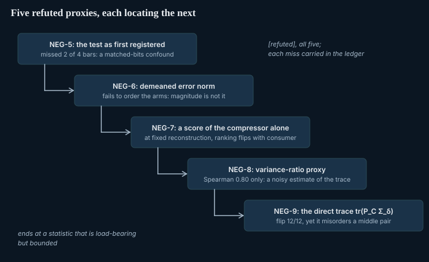
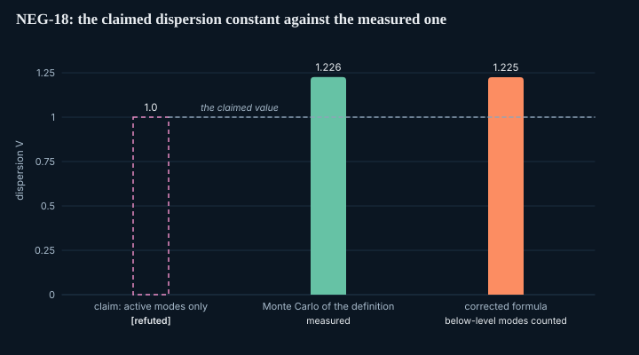

Chapter 16 — Honest Negatives: The Boundaries, Kept With the Results
This is the chapter the discipline of Chapter 15 exists to make possible. Every claim below is a bet the program placed and lost, or a plausible idea it refuted, and every one is carried here at the same prominence as the win it bounds — because a sealed miss that is softened after the fact is not a result, it is a rumor. The house rule has a corollary the charter states outright (VI-3): misses are first-class; a refuted or missed-gate row is carried into every downstream artifact as prominently as a win it bounds. Read this chapter as the load-bearing one. A framework is only as trustworthy as its stated boundaries, and these are the boundaries.
The negatives, in order
NEG-1 — fixed-scale, uniform-in-$m$ bi-Lipschitz for the commute filter. [refuted].
The commute filter’s angular bound is scale-dependent; the uniform-in-truncation version
fails. The heat filter, by contrast, is uniform-in-truncation bi-Lipschitz — the dichotomy
is sharp and stated both ways (Chapter 9). This is the negative that keeps Keep-the-Angle
from over-claiming: the angle survives, but not uniformly in the mode count for every filter.
NEG-2 — reconstruction cosine as a proxy for key quality. [refuted]. Cosine 0.995,
perplexity $\sim 10^4$. The founding negative of the whole program (Chapter 2): a
reconstruction number can say “lossless” while the consumer says “ruined.”
NEG-3 — heat-taper reversal on BGE-M3. [refuted] (pending confirm). An over-claimed
taper reversal on a real embedding model, held pending the C2.1 confirmations. Carried even
though not yet fully resolved, because a pending negative is still a negative.
NEG-4 — lightweight online (Lloyd) key calibration beats the default. [refuted]. It
improves reconstruction and is worse on the consumer metric — reconstruction-is-not-the-
target, in its purest, most anti-correlated form.
NEG-5 … NEG-9 — the KV-key ladder that found the right statistic. Five refuted proxies, and together the most instructive sequence in the ledger, because each refutation located the next hypothesis:
- NEG-5: the originally-registered test missed (2/4 bars); the apparent reversal was a matched-bits confound (an uncounted per-block codebook, ~+25% bits). Refutes the test, not GO-2 — and forced a bit-matched redesign.
- NEG-6: a demeaned-error-norm proxy fails to order the arms. The controlling quantity is the across-token variance of the query-projected error, not an error-magnitude scalar. Magnitude ≠ downstream-relevant structure (Chapter 6’s lemma, learned here).
- NEG-7: at fixed reconstruction, the downstream ranking flips with the consumer. Invariant-preservation is a property of the (compressor, consumer) pair, not the compressor — the sharpest form of GO-2’s negative half.
- NEG-8: the variance-ratio proxy reaches only Spearman 0.80; it is a noisy linear estimator of $\operatorname{tr}(P_C\Sigma_\delta)$. Gate on the direct projection instead.
- NEG-9: even the direct trace $\operatorname{tr}(P_C\Sigma_\delta)$, while nailing the discriminating flip 12/12, is not a complete rank statistic — it misorders a middle pair whose per-token error has structure the trace misses. The mechanism is real; the scalar is not exhaustive.
The ladder is a model of the discipline working: five sealed misses, each carried, each sharpening the claim, converging on a statistic that is load-bearing but bounded. This is what it looks like to find the truth by refuting its neighbors.
NEG-10 — the flip appears on any independent representation (prospective). [refuted].
On embedding retrieval, arm b reconstructed strictly better and Pareto-dominated
downstream — no flip — so reconstruction was not falsified there. Precondition discovered:
the flip is observable only for reconstruction-matched arms. The anti-probe half still
transferred. This negative is why every later flip row is built on recon-matched arms; the
miss defined the protocol.
NEG-11 — the $\alpha = 1$ density quotient restores fidelity outside diffusion
(prospective ×4). [refuted]. Across four non-spectral domains: direct affinity and ADC/PQ
— $\alpha$ hurts (density not in the retrieval base, entangled with the invariant);
diffusion-distance — $\alpha = 1$ is the optimal exponent (direction correct) but the
restoration is $<2\%$ and not density-specific (a uniform control gains as much). The
density-nuisance-removal mechanism is absent; the Laplace–Beltrami effect is
operator/spectral-confined. Retained positive: $\alpha = 1$ is the optimal diffusion
exponent, non-spectrally. A clean example of keeping the narrow true thing and refuting the
broad hoped-for one.
NEG-12 — the blind probe clears the bar on a real frontier model (prospective).
[refuted]. On Llama-3.2-3B keys, recovery was real but sub-bar (median overlap 0.567 vs
sealed 0.60, ≈4.5× chance), and the registered quantizer pair was not recon-matched, so
proj_beats_recon could not fire. Two of three sealed triggers missed → the theory was
bounded to synthetic consumers on that evidence. The corrected rematch (recon-matched arms)
later passed 4/4 [GO-P-2026-021], but NEG-12 stands as its own negative — the first
sealed real-model design was flawed, and clearing a later, better-designed bar does not erase
the earlier miss.
NEG-13 → resolved — the omission floor as a finite-rate wall on a real model. A sealed finite-rate gate missed 0/16 (softmax-KL was still improving at the top swept rate). This was a shallow-sweep artifact, not a refutation — the criterion conflated floor-reached with floor-exists. The resolution is the model of the standing over-strict-gate rule (VI-2): the gate flaw was logged, and the claim was resolved not by relaxing the sealed bar but by a fresh R-IND-6 test — GO-P-2026-027, sealed before the run, on held-out layers {4,20}, a different corpus — which passed (read-metric floor 16/16, downstream floor 16/16, asymptotic ratio 800–5700×). The omission floor is thus [demonstrated] downstream on a trained model. The lesson: a sealed gate can fail for gate-design reasons while the claim is true, and the honest fix is a fresh sealed test, never a quiet relaxation.
NEG-14 — a single statistic predicts the flip regime (prospective). [refuted]. A sealed
one-number shortcut (median_unit_displacement) broke on its first prospective test: a
synthetic concentrated source with unit_disp 0.649 (rule ⇒ “needs blind-probe”) had generic
polar win at 1 bit. The two-axis reconciliation stands (the regime needs concentration and
correlation, Chapter 12); only the shortcut is refuted. The discipline caught an over-simple
rule on its first domain — which is the point of prospective sealing.
NEG-17: the adversarial observer’s tie theorem, as sealed. [refuted], the iff clause
only.
The claim. GO-16’s Theorem 3 says that in the diagonal game the reader’s attention water level sits at one of the coordinates’ read weights μ_j, and that the spectral tie, where the reader is indifferent between its k-th and (k+1)-th directions, holds exactly when some coordinate is contested. Registration 090 sealed that claim, and its governed run passed.
The refutation. A fresh-context re-check, three months after the seal (VI-30), found that the level can also sit at zero, a blackout regime. There, every coordinate worth shielding is hidden completely and only the conceded ones are revealed. The witness is μ = (5, 3, 2, 1), s² = (10, 0.1, 0.1, 0.1), λ = 1 and k = 2. The optimum reveals one coordinate fully and hides the rest, so the tie holds at zero while no coordinate is contested. It was confirmed two ways, from the paper’s own water-level function and by brute force.
Why the sealed run passed. The gate that should have tested the iff was circular by construction, and no instance it ran was in the blackout regime.
What stands. Theorems 1–2 (the revelation reduction, the partition) and the analysis at a positive level.
The lesson is the one VI-4 taught, three months later. A passing gate certifies only what it can fail. A fresh context is what finds the regime nobody sampled.
NEG-18: the dispersion counts only the active modes. [refuted], the constant only.
The claim. Paper III’s corollary and the book’s B7 gave the second-order dispersion of the consumer-relative parallel Gaussian code as V = (r_D/2) log² e, that is, r_D/2 in nats², where r_D is the number of modes above the water level. The value came from VI-7’s “sharpening” in July.
The refutation. A custody pass in November (VI-32) derived the d-tilted information and found that modes below the water level still contribute (γ_k/θ)²/2 each. Fluctuations in their energy have to be absorbed by the active modes. In nats², a Monte Carlo of the definition gives 1.226 where the claim gives 1.0, and the corrected formula gives 1.225.
What stands. The bound: the dispersion counts at most the r read dimensions, never the ambient d. It counts exactly r when every mode is active. The first correction wrote a strict “< r”, which is false there; the re-check VI-34 caught it, and the ledger row has been fixed.
Why the harness passed. It sampled only distortions at which every mode is active. That is the same pattern as NEG-17, and here the sharpening itself was the error.

Figure 16.1. A schematic of the KV-key ladder, NEG-5 to NEG-9. Each box is a sealed proxy or test that was refuted, with what the refutation showed. Each miss located the next hypothesis, and the sequence ends at the direct trace, which gets the discriminating flip right 12 of 12 times and is still not a complete rank statistic. NEG-5 refutes the registered test and not claim GO-2.

Figure 16.2. NEG-18, the refuted dispersion constant, against what was measured. The claim V = (r_D/2) log² e, which counts only the modes above the water level, gives 1.0 on the test case and is drawn as a dashed outline because it is [refuted]. A Monte Carlo of the definition gives 1.226. The corrected formula, in which each mode below the level adds (γ/θ)²/2, gives 1.225. The vertical axis is the dispersion V in the units the chapter prints. What stands is the bound: the dispersion counts at most the read dimensions.
The four kinds of boundary
The negatives are not a random pile; they sort into the four degeneracies of $P_C$ (Chapter 12), and the sort is what makes them a theory of the boundary rather than a list of disappointments:
- Identifiability (fixable): NEG-5, NEG-10, legal-035, NEG-12 — the read operator was mis-estimated or the arms weren’t recon-matched. Fixed by the blind probe and by protocol.
- Coupling (a true boundary): D4 — read and signal energy intrinsically aligned; not rehabilitatable by any read-operator recovery.
- Precondition (needs a working consumer): moral-on-frozen-embeddings — no read direction to protect until the consumer is competent.
- Mechanism-absent (a genuine refutation): NEG-11 — the claimed effect does not exist.
Three of four are diagnosable before the experiment; one is a hard wall. Knowing which kind a failure is tells you whether to fix the instrument, fix the consumer, or state a boundary and stop.
Why the losses are the credential
I want to end the chapter on the thing that is easy to miss. The negatives above are not the framework’s weaknesses managed into the open; they are its credential. A theory that has placed a dozen sealed bets and reported the losses at full prominence has done the one thing a highlight reel cannot: it has shown you the shape of where it fails, which is the only way to trust where it succeeds. The stand-down clause (Chapter 15) says the program continues smaller when a bet is lost; this chapter is that clause, exercised, sixteen times. The book may not assert what the ledger cannot show — and the ledger shows the misses. Part VII looks forward from here, to the open problems and the single principle the whole framework reduces to.